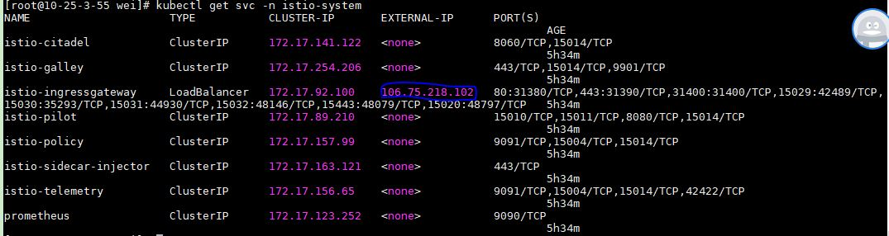
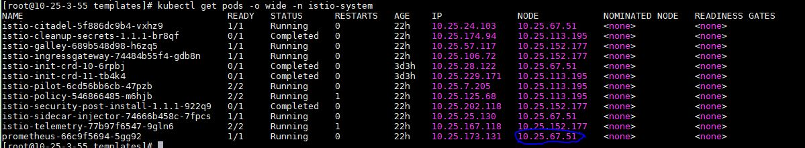
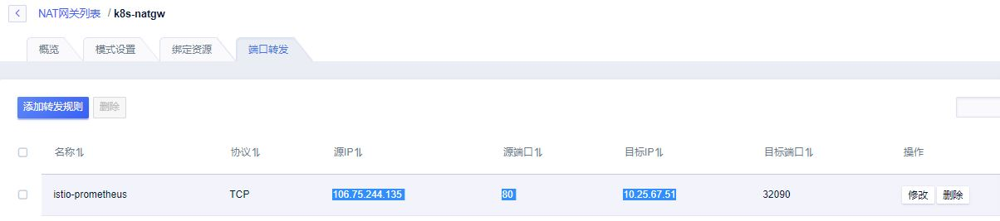
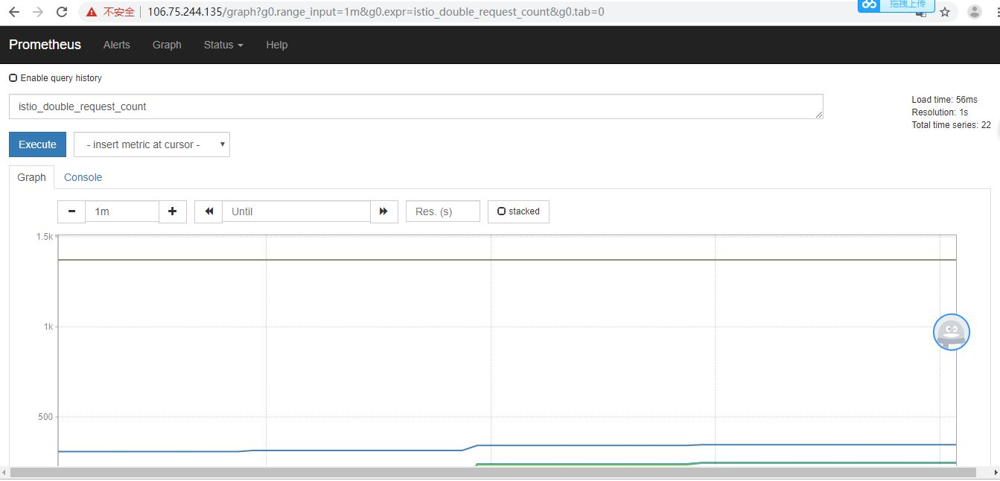
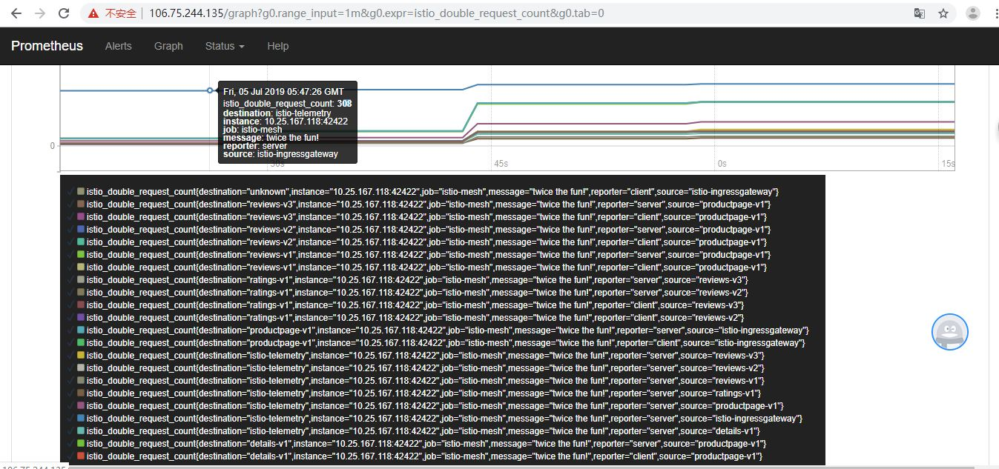

istio安装 #
有以下几种方式安装Istio：
- 使用install/kubernetes文件夹中的istio-demo.yaml进行安装；
- 使用Helm template渲染出Istio的YAML安装文件进行安装；
- 使用Helm和Tiller方式进行安装。
对于生产环境下或大规模的应用，推荐使用 Helm和 Tiller 方式安装 Istio，这样可以灵活控制Istio的 所有配置项，方便管理各个组件。
- 第二种方式安装
#资源准备
wget https://github.com/istio/istio/releases/download/1.1.1/istio-1.1.1-linux.tar.gz
tar xvf istio-1.1.1-linux.tar.gz
#建立namespace
$ kubectl create namespace istio-system
#Istio CRD安装
$ helm template install/kubernetes/helm/istio-init --name istio-init --namespace istio-system | kubectl apply -f -
#CRD验证
$ kubectl get crds | grep 'istio.io\|certmanager.k8s.io' | wc -l
53
#Istio 的核心组件安装
$ helm template install/kubernetes/helm/istio --name istio --namespace istio-system | kubectl apply -f -
#验证
$ kubectl get svc -n istio-system
$ kubectl get pods -n istio-system
- 第一种方式安装
# 如果以上安装有问题, 可一键安装istio
kubectl apply -f install/kubernetes/istio-demo.yaml
Bookinfo示例 #
Bookinfo应用 #
#手动注入
$ kubectl apply -f <(istioctl kube-inject -f samples/bookinfo/platform/kube/bookinfo.yaml)
#安装gateway
$ kubectl apply -f samples/bookinfo/networking/bookinfo-gateway.yaml
#验证gateway
$ kubectl get gateway
#访问应用
$ export INGRESS_HOST=$(kubectl -n istio-system get service istio-ingressgateway -o jsonpath='{.status.loadBalancer.ingress[0].ip}')
$ export INGRESS_PORT=$(kubectl -n istio-system get service istio-ingressgateway -o jsonpath='{.spec.ports[?(@.name=="http2")].port}')
$ export GATEWAY_URL=$INGRESS_HOST:$INGRESS_PORT
$ curl -s http://${GATEWAY_URL}/productpage | grep -o "<title>.*</title>"
访问应用 浏览器中打开应用程序页面 
路由 #
基于版本的路由 #
#在目标规则中定义好可用的版本，命名为 subsets
$ kubectl apply -f samples/bookinfo/networking/destination-rule-all.yaml
#基于版本的路由: virtual service 将所有流量路由到每个微服务的 v1 版本
$ kubectl apply -f samples/bookinfo/networking/virtual-service-all-v1.yaml
$ kubectl delete -f samples/bookinfo/networking/virtual-service-all-v1.yaml
基于用户身份的路由 #
#基于用户身份的路由: 来自名为 Jason 的用户的所有流量将被路由到服务 reviews:v2
$ kubectl apply -f samples/bookinfo/networking/virtual-service-reviews-test-v2.yaml
$ kubectl delete -f samples/bookinfo/networking/virtual-service-reviews-test-v2.yaml
遥测 #
收集指标和日志 #
helm template install/kubernetes/helm/istio --name istio --namespace istio-system \
--set prometheus.enabled=true \
--set prometheus.ingress.enabled=true \
--set prometheus.service.nodePort.enabled=true \
--set prometheus.service.nodePort.port=32090 \
> ./001-my-istio.yaml
kubectl apply -f 001-my-istio.yaml
kubectl apply -f new_telemetry.yaml
#向示例应用发送流量
curl http://$GATEWAY_URL/productpage
注意: 外网访问不了, 需要在uk8s集群上做NAT路由到Prometheus服务所在的Node
 
打开Prometheus界面并查询 istio_double_request_count 的值  
- 熔断 【参考6】
#结果验证
[root@10-25-3-55 istio-1.1.1]# kubectl exec -it $FORTIO_POD -c istio-proxy -- sh -c 'curl localhost:15000/stats' | grep httpbin | grep pending
cluster.outbound|8000||httpbin.default.svc.cluster.local.circuit_breakers.default.rq_pending_open: 0
cluster.outbound|8000||httpbin.default.svc.cluster.local.circuit_breakers.high.rq_pending_open: 0
cluster.outbound|8000||httpbin.default.svc.cluster.local.upstream_rq_pending_active: 0
cluster.outbound|8000||httpbin.default.svc.cluster.local.upstream_rq_pending_failure_eject: 0
cluster.outbound|8000||httpbin.default.svc.cluster.local.upstream_rq_pending_overflow: 109
cluster.outbound|8000||httpbin.default.svc.cluster.local.upstream_rq_pending_total: 172
参考 #
- 使用 Helm 进行安装
- Istio及Bookinfo示例程序安装试用笔记
- Bookinfo Application
- 配置请求路由
- 收集指标和日志
- 熔断 done
- Quick Start Evaluation Install istio快速安装 未
- 《云原生服务网格Istio：原理、实践、架构与源码解析》 张超盟，章鑫，徐中虎，徐飞